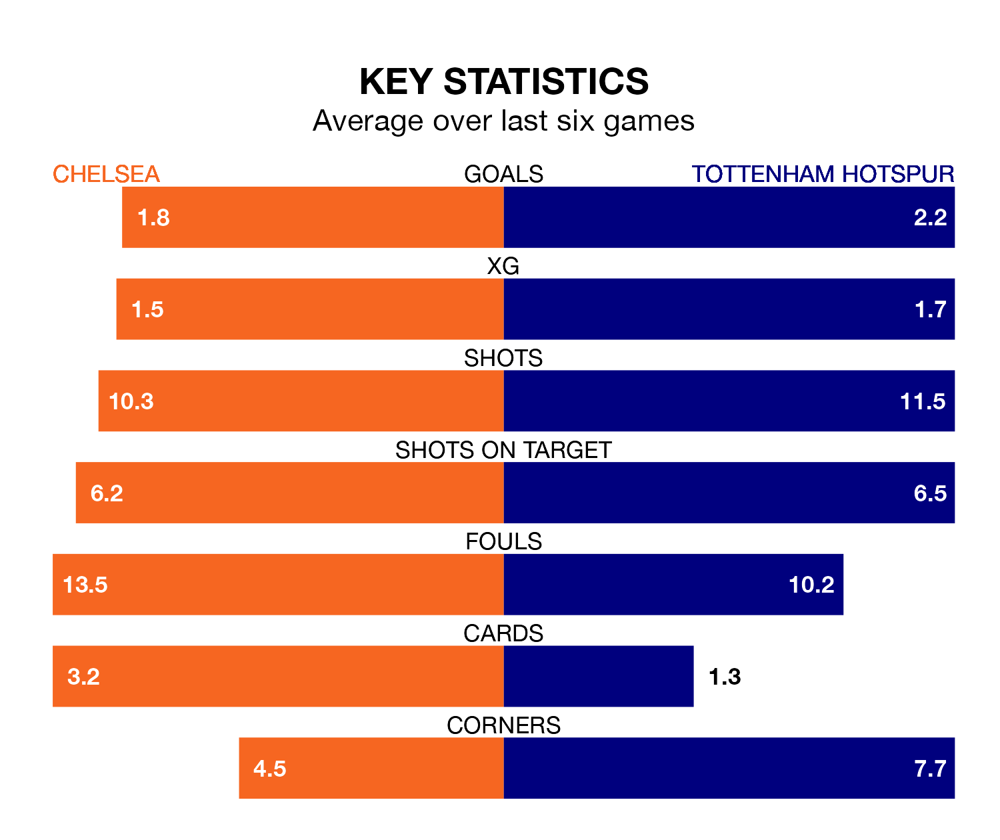

Tottenham Hotspur travel to Chelsea on late Thursday in the Premier League.
The visitors come into the game on the back of a defeat in their last match, having lost to Wolverhampton Wanderers 2-1 at home, with a goal from Dejan Kulusevski.
The Blues, meanwhile, drew their last match, 1-1 against Manchester City, with their goal scored by Raheem Sterling.
With 52 goals in 25 games so far this season, Spurs are scoring more than average in the league with 2.1 goals per game. And they are conceding fewer than average, letting in 38 goals at a rate of 1.5 per game.
Chelsea are also above average scorers, with 1.7 goals per game, compared to a league average of 1.6. They have conceded 1.6 goals per game.
In the last 10 years, Chelsea and Spurs have played each other on 27 occasions. Chelsea won 16 of them, Spurs six, and they drew five times.
On average, the Blues scored 1.8 goals and Spurs 1.0 in those matches.
Their last meeting was on November 6, when Chelsea won 4-1 away.
Tottenham are fifth in the table after 25 games, of which they have won 14 and drawn five, earning 47 points.
The Blues are five places behind the away side in 10th, with 10 wins and five draws putting them on 35 points.
In Heung-Min Son, Spurs have one of the league's sharpest shooters so far this season. He has notched 12 goals in 22 appearances, to sit fifth in the scoring charts.
His goal rate of one every 151 minutes is quicker than that of Nicolas Jackson, the hosts' top scorer with a goal every 234 minutes, and a total of seven goals in 22 games.
Chelsea are in mixed form in the Premier League, with three wins and a draw from their last six games.
With three wins and two draws over that period, Spurs's form is slightly better – they have taken 11 points from 18, compared to Chelsea's 10.
Updated: 12:18 (UTC), 19/02/24